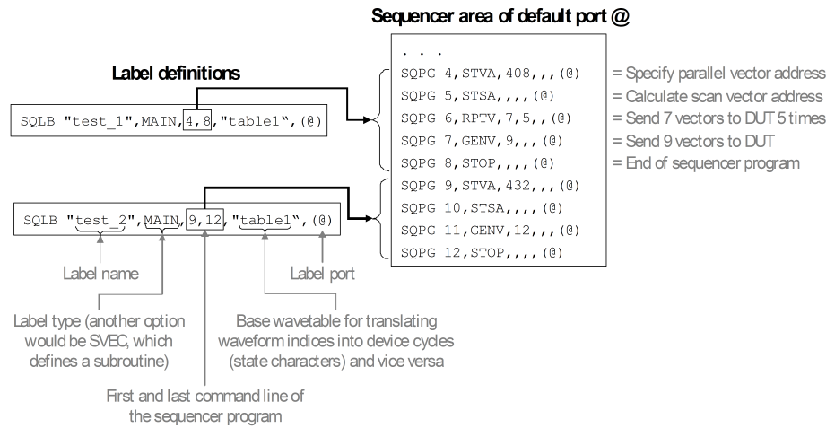

Label definition, sequencer program, and sequencer area
The sequencer program is contained in a sequencer area. Sequencer areas are port specific. Every such area contains the programs of all labels that are associated with the respective port. If a pin belongs to more than one port, its memory (more precisely, the memory of the tester channel that is associated with this pin in the pin configuration) contains several sequencer areas.
The command number of an instruction is unique within the sequencer area, that is, the instructions are numbered across programs, starting from 0. The label definition points to the location of the sequencer program within the sequencer area of the label port (see The structure of labels).
Every label is associated with the same sequencer program on all pins that belong to the port of the label. Thus, the sequencer areas for a port are identical on all pins of this port.
Example
The following figure shows the label definitions of the standard example and the corresponding sections of the sequencer area for the default port @:

Since the default port contains all configured pins, the sequencer area on the right side of this figure is stored in the memory of all pins.
Functional changes
- Introduced before SmarTest 6.3.2